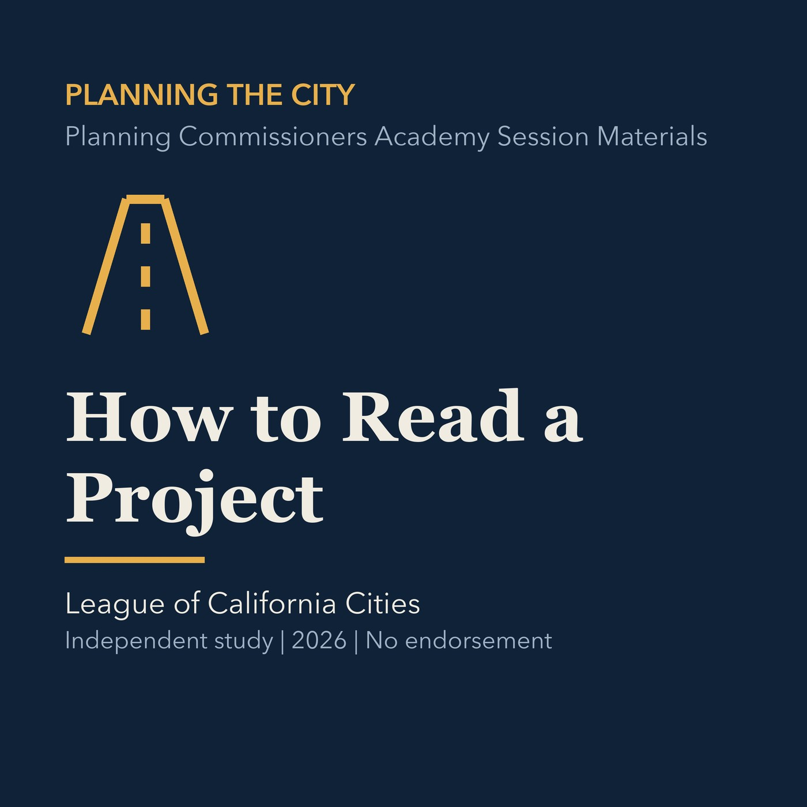

EPISODE 04
How to Read a Project
Provides a repeatable method for reading plans, staff analysis, evidence, and requested entitlements.

- Stable GUID
023a20cf-68f7-5505-9ba3-cdbb3095a268- Release
- planning-commission-prep-v2026.2
- SHA-256
ceffb13afe49a95f0093d65e4784c1f46c274b7e9948929284a125f74a2bef0e